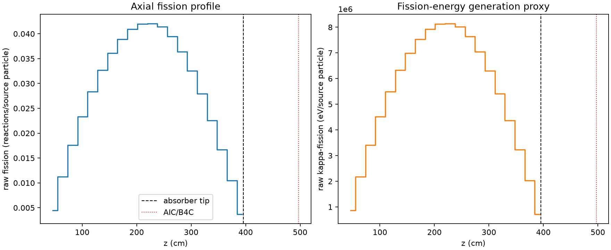
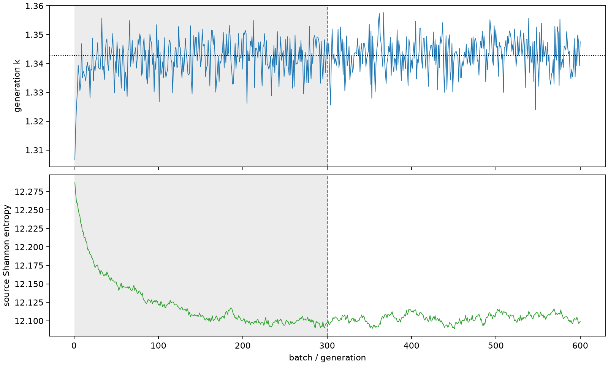

| field | value |
|---|---|
| experiment | V2-STAGE_128_OGRENCI_03-0016 |
| k | 1.3427069101031868 |
| MC standard error | 0.00018540002593621594 |
| seconds | 949.6477166749974 |
| acceptance | not_assessed |
| convergence | review_required |
Completed is output integrity only; physical and statistical review required. Zero tallies do not prove zero production or zero uncertainty.
| diagnostic | value |
|---|---|
| geometric fuel voxels | 5280 |
| zero fission tally voxels | 0 |
| low signal fuel voxels | 0 |
| low signal fission share | 0.0 |
| low signal kappa share | 0.0 |
| important fission share | 0.950041451484732 |
| previous filter included | 5280 |
| duration estimate s | 1562.5173488400023 |
| actual minus estimate s | -612.869632165005 |
| fission relative MC error | statistics |
|---|---|
| all_geometric_fuel | {"voxels": 5280, "positive_mean_voxels": 5280, "zero_mean_voxels": 0, "undefined_relative_error_voxels": 0, "median": 0.010605741283026111, "p95": 0.02819166992604037, "maximum": 0.039132044928175194} |
| low_signal | {"voxels": 0, "positive_mean_voxels": 0, "zero_mean_voxels": 0, "undefined_relative_error_voxels": 0, "median": null, "p95": null, "maximum": null} |
| important_95pct | {"voxels": 4279, "positive_mean_voxels": 4279, "zero_mean_voxels": 0, "undefined_relative_error_voxels": 0, "median": 0.009975438409495377, "p95": 0.01451783641039809, "maximum": 0.018016916972059486} |
| outside_previous_filter | {"voxels": 0, "positive_mean_voxels": 0, "zero_mean_voxels": 0, "undefined_relative_error_voxels": 0, "median": null, "p95": null, "maximum": null} |
| kappa_fission relative MC error | statistics |
|---|---|
| all_geometric_fuel | {"voxels": 5280, "positive_mean_voxels": 5280, "zero_mean_voxels": 0, "undefined_relative_error_voxels": 0, "median": 0.010595003247026214, "p95": 0.02815927577169993, "maximum": 0.039083079105188476} |
| low_signal | {"voxels": 0, "positive_mean_voxels": 0, "zero_mean_voxels": 0, "undefined_relative_error_voxels": 0, "median": null, "p95": null, "maximum": null} |
| important_95pct | {"voxels": 4279, "positive_mean_voxels": 4279, "zero_mean_voxels": 0, "undefined_relative_error_voxels": 0, "median": 0.009964845393766499, "p95": 0.014502136468357612, "maximum": 0.01799722417075971} |
| outside_previous_filter | {"voxels": 0, "positive_mean_voxels": 0, "zero_mean_voxels": 0, "undefined_relative_error_voxels": 0, "median": null, "p95": null, "maximum": null} |
| axial bin | fission share | kappa-fission share |
|---|---|---|
| 1 | 0.008092576268115503 | 0.008092911968566829 |
| 2 | 0.020497703416456875 | 0.02049763125378409 |
| 3 | 0.03201654205132016 | 0.032016523277469185 |
| 4 | 0.04247861595520314 | 0.04247844841837562 |
| 5 | 0.05172724183970866 | 0.05172723391794063 |
| 6 | 0.05955438897991845 | 0.05955428214230754 |
| 7 | 0.06581540441236837 | 0.06581542410733382 |
| 8 | 0.07093360839522422 | 0.07093343754367297 |
| 9 | 0.07458692354684554 | 0.07458688663563721 |
| 10 | 0.07642589632887072 | 0.07642581867119191 |
| 11 | 0.07655734017996642 | 0.07655737509693299 |
| 12 | 0.07546054455085408 | 0.0754604985370584 |
| 13 | 0.07191816723296796 | 0.07191809677915342 |
| 14 | 0.06631224533898988 | 0.06631228311424195 |
| 15 | 0.05927060248454709 | 0.05927058315725 |
| 16 | 0.050931361261927204 | 0.05093141852968622 |
| 17 | 0.04109648241112825 | 0.041096477369474985 |
| 18 | 0.03047198927830804 | 0.0304719044037707 |
| 19 | 0.01910553212003848 | 0.019105414750445582 |
| 20 | 0.006746833947240904 | 0.006747350325705916 |
Histories include the inactive-to-active transition at batch 300. kappa-fission approximates fission energy production, not total heat deposition.

